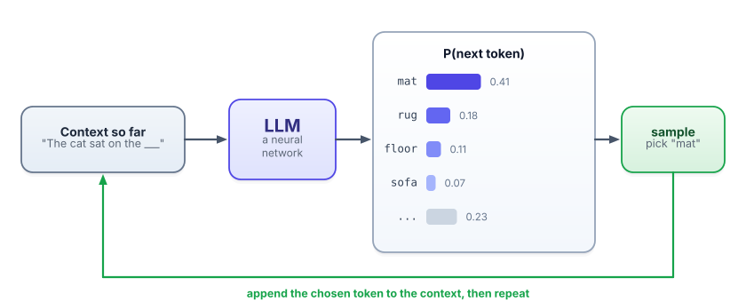
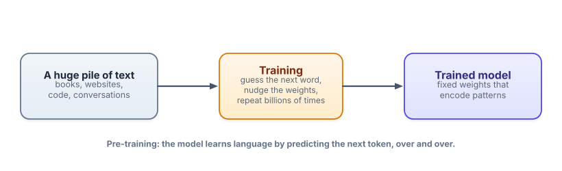

What is a language model?
Almost everything confusing about AI gets clear once you understand the one simple thing these models actually do. It’s not magic, it’s not a search engine, and it’s not a database. It’s a next-word guesser — and that idea, taken seriously, explains the rest of this course.
Why this is the first thing to learn
People assume a large language model “looks up” answers, or “understands” the way a person does. Both assumptions lead you astray — they make hallucinations baffling, prompting feel like superstition, and limits feel arbitrary. The reality is simpler and far more useful to hold in your head: a language model is a machine that, given some text, predicts what text comes next. That’s it. Once that clicks, you can reason about why it behaves the way it does, instead of memorizing rules.
A language model (LM) is a program that takes some text and predicts what comes next. A large language model (LLM) is just a language model with a very large number of internal numbers — its parameters — trained on a very large amount of text. “Large” today means billions of parameters and trillions of words of training text.
The one move: predict the next token
Models don’t read whole words at a time. They read tokens — short chunks of text (a token is roughly a word or a word-piece; we’ll dissect them in the very next lesson). Given the tokens so far, the model outputs a probability for every possible next token in its vocabulary. Not one answer — a ranked distribution over tens of thousands of options.

Then the model (or rather, the program around it) picks one token from that distribution, sticks it onto the end of the text, and runs the whole thing again to get the next one. Doing this repeatedly — each new token feeding back in as input — is called autoregression (“auto” = self, “regression” = predicting from previous values; here, predicting from its own previous outputs). A full essay is nothing more than this single guess, repeated one token at a time.
Give the model the text "The capital of France is". Internally it produces something like:
Paris → 0.92 · a → 0.02 · the → 0.02 · located → 0.01 · (everything else) → 0.03
It’s very confident, so Paris gets picked. Now feed in "The capital of France is Paris" and it might predict , or . next, then maybe which, then is… and a sentence assembles itself. The model never “decided to tell you about France.” It just kept answering “what’s a likely next token?” — and likely-next-token, over and over, looks like knowing the answer.
Next-token predictor
Pick a starting context and see a realistic distribution over the next token. Notice how the model’s confidence changes with the context.
Where the “knowledge” comes from: training
So how does guessing the next token end up encoding facts, grammar, and reasoning? Through training. The model is shown enormous amounts of text and, for each spot, asked to predict the next token. When it’s wrong, an algorithm nudges its parameters slightly so it would be a little less wrong next time. Repeat across trillions of tokens and billions of tiny adjustments, and the parameters gradually come to encode the patterns of language — and, as a side effect, a great deal of the knowledge expressed in that language.

This trick — using the data’s own continuation as the right answer — is called self-supervised learning. It’s the reason training can scale to the entire web: nobody has to hand-label examples. The end product is a fixed set of numbers (the weights, another word for parameters). At that point the model is frozen; running it to generate text is called inference, and it doesn’t learn anything new while doing so.
Because the knowledge is baked into frozen weights at training time, the model has a knowledge cutoff: it knows nothing that happened after its training data ends, and it doesn’t “remember” your previous conversations unless that text is fed back into it. Hold onto this — it explains a lot in Tracks 3 (RAG) and 4 (agents).
Why ChatGPT feels different from a “next-word guesser”
A model fresh out of pre-training (a base model) just continues text — give it a question and it might continue with more questions, because that’s a plausible continuation of a document. To make it a helpful assistant that follows instructions, model builders add a second phase: they fine-tune it on examples of instructions-and-good-responses, and further shape it using human preferences. The result is an instruction-tuned or chat model. We’ll go deep on how that works in Track 5; for now just know the assistant you talk to is a base next-token predictor that’s been taught manners.
- An LLM does one thing: given the tokens so far, output a probability for every possible next token.
- It generates text by sampling one token, appending it, and repeating — that loop is autoregression.
- It learned by predicting the next token over trillions of words (self-supervised pre-training), which bakes patterns and knowledge into frozen weights.
- Frozen weights ⇒ a knowledge cutoff and no memory of past chats unless that text is supplied again.
- Chat assistants are base models instruction-tuned to follow directions — same engine, better manners.
You ask an LLM, “What did I tell you my name was yesterday?” and it confidently makes up a name. From what you now know, why?
1. In your own words, explain why generating a 300-word answer is “the same operation done ~400 times.”
2. A friend says “The model looked up that Paris is the capital of France.” Correct them precisely.
3. Predict: for the context "The mitochondria is the powerhouse of the", will the model be very confident or unsure about the next token? Why?
▸ Show solutions & reasoning
1. Each token is one forward pass that yields a probability distribution; you sample a token, append it, and feed the longer text back in. A 300-word answer is roughly 400 tokens, so it’s that single predict-sample-append step repeated ~400 times. There’s no separate “planning the whole answer” step — coherence emerges from each step conditioning on everything generated so far.
2. It didn’t “look up” anything. During training it saw “capital of France is Paris” in countless forms, which shaped its weights so that, given that context, Paris has overwhelmingly high next-token probability. At inference it computes that probability and samples — no database, no retrieval, just learned likelihood.
3. Very confident. “the powerhouse of the cell” is an extremely common phrase in training text, so cell will dominate the next-token distribution — a near-deterministic continuation. Contrast that with “I can’t decide what to have for ___,” where many continuations are equally plausible and the model is far less certain. Confidence is just how peaked the distribution is.
It’s fair to be skeptical that something so simple could write code or pass exams. Here’s the intuition for why it works. To predict the next token well across all of human text, a model is pushed to internalize whatever structure makes text predictable: grammar, of course, but also facts (“the capital of France is ___”), arithmetic patterns, the rules of chess notation, the shape of a valid Python function, even the gist of an argument (“therefore, ___”). Getting the next token right at scale requires capturing these regularities. So “mere” prediction, pushed hard enough, produces something that behaves a lot like understanding for many tasks.
But the same lens shows the limits. The model optimizes for plausible, not true. When a fluent continuation and a correct continuation diverge — an obscure fact, a fresh event, a tricky calculation — it will happily produce the fluent one. That’s hallucination, and it’s not a glitch bolted on; it’s the flip side of the very mechanism that makes the model powerful. Much of this course — grounding with RAG, tool use, evals, guardrails — is about systematically closing the gap between “plausible” and “true.”
You now know what the engine does. Next, let’s zoom into the fuel it runs on: tokens — what they are, why they’re weird, and why they quietly control your costs and limits.